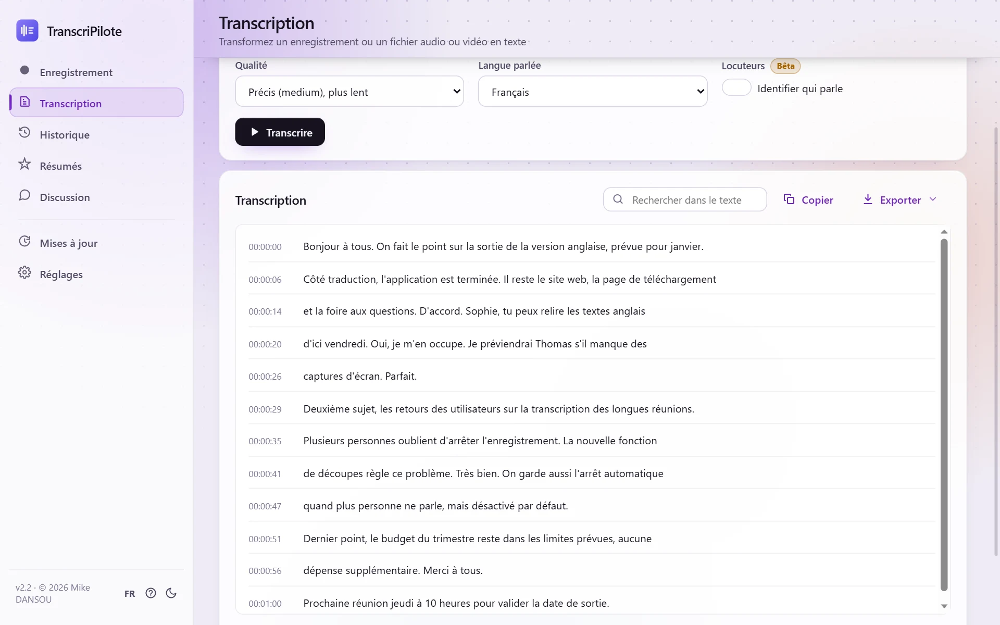
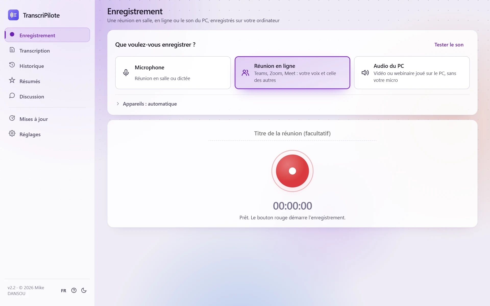

Vos réunions, transcrites et résumées sur votre ordinateur.
TranscriPilote enregistre vos réunions Teams, Zoom, Meet ou en salle, les transcrit, en tire un résumé et répond à vos questions. Tout se passe sur votre PC Windows : aucun compte, aucun abonnement, aucune réunion envoyée sur Internet.

- Traité sur votre PCTranscription, résumé et questions tournent sur votre processeur.
- Sans carte graphiqueUn PC portable ordinaire suffit, sans droits administrateur.
- Français et anglaisL'application, les transcriptions et les résumés.
De la réunion aux décisions
Quatre étapes, du premier mot prononcé à la liste des actions à faire.
-
1
Enregistrez
Une réunion en ligne (Teams, Zoom, Meet), une réunion en salle au micro, ou un fichier audio ou vidéo existant. TranscriPilote suit le casque ou les haut-parleurs si vous en changez en cours de route.

-
2
Transcrivez
La parole devient un texte horodaté, fidèle, même sur un processeur de plusieurs années. Une transcription interrompue reprend là où elle s'était arrêtée.
-
3
Résumez
Une IA installée sur votre PC rédige le résumé, les points clés et les actions à faire. Ajoutez le nom des participants pour un résultat plus juste.

-
4
Interrogez
Posez vos questions à la réunion : « qui relit les textes, et pour quand ? ». Les réponses s'appuient uniquement sur ce qui s'y est dit.

Pensé pour les vraies journées de travail
Une réunion oubliée en marche ?
Choisissez la partie utile à l'heure près, transcrivez seulement elle, ou coupez l'enregistrement.
Dictée sans Internet
Un bouton micro écrit vos questions et vos consignes pendant que vous parlez.
Rien ne s'interrompt
Ni une mise à jour, ni une fermeture de fenêtre, ni une coupure de courant ne fait perdre un travail en cours.
Arrêt automatique, si vous le voulez
Quand plus personne ne parle, ou après une durée maximale. Désactivé par défaut, et discret.
Vos réunions restent chez vous.
Rien de ce qui se dit en réunion ne quitte votre ordinateur. TranscriPilote ne se connecte à Internet que pour :
- vérifier qu'une nouvelle version existe, sur GitHub ;
- télécharger une fois les modèles de transcription, au premier usage ;
- copier vos données vers votre propre Google Drive ou OneDrive, si vous activez la sauvegarde.
Face aux services de transcription en ligne
| Critère | TranscriPilote | Services en ligne habituels |
|---|---|---|
| Où sont traitées vos réunions | Sur votre PC | Sur des serveurs distants |
| Prix | Gratuit, sans limite | Abonnement ou quota de minutes |
| Compte à créer | Aucun | Obligatoire |
| Fonctionne hors connexion | Oui | Non |
| Questions sur la réunion | Oui, en local | Selon l'offre |
Essayez-le sur votre prochaine réunion.
Gratuit, sans inscription. L'installation prend quelques minutes, dans votre profil Windows.